НТК, управление охраны окружающей среды
Разработка визуальной идентичности для Управления охраны окружающей среды Национальной транспортной компании (НТК). Проект включал создание логотипа, фирменной графики и системы коммуникации на основе существующего фирменного стиля компании.
Управление охраны окружающей среды НТК выполняет важную функцию внутри компании, однако не имело собственной визуальной идентичности. Задачей проекта было разработать фирменный стиль, который подчеркнет экологическое направление подразделения, сохранив при этом визуальную связь с корпоративным брендом.
Важно было создать узнаваемую и самостоятельную систему коммуникации, не выходя за рамки существующей айдентики НТК.
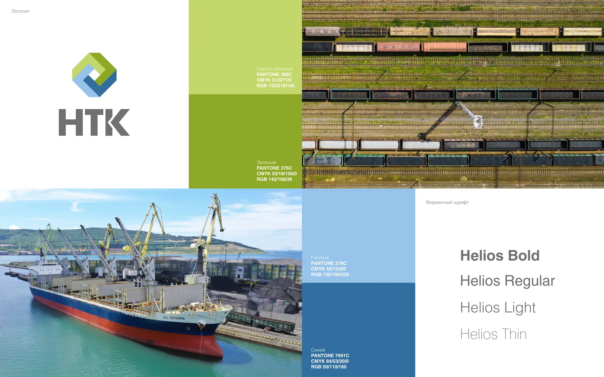
В основу визуальной системы легли элементы фирменного стиля Национальной транспортной компании, дополненные собственной графической системой, отражающей экологическую направленность подразделения.
Была разработана айдентика, включающая логотип, фирменную графику, цветовые акценты и набор коммуникационных материалов. Визуальная система легко масштабируется на различные носители, сохраняя единый корпоративный стиль компании и одновременно позволяя подразделению иметь собственную узнаваемую визуальную идентичность.
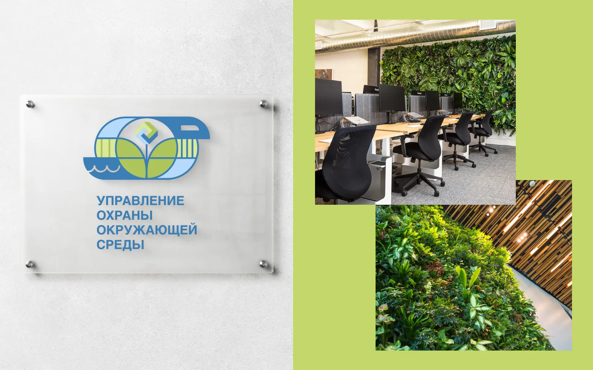
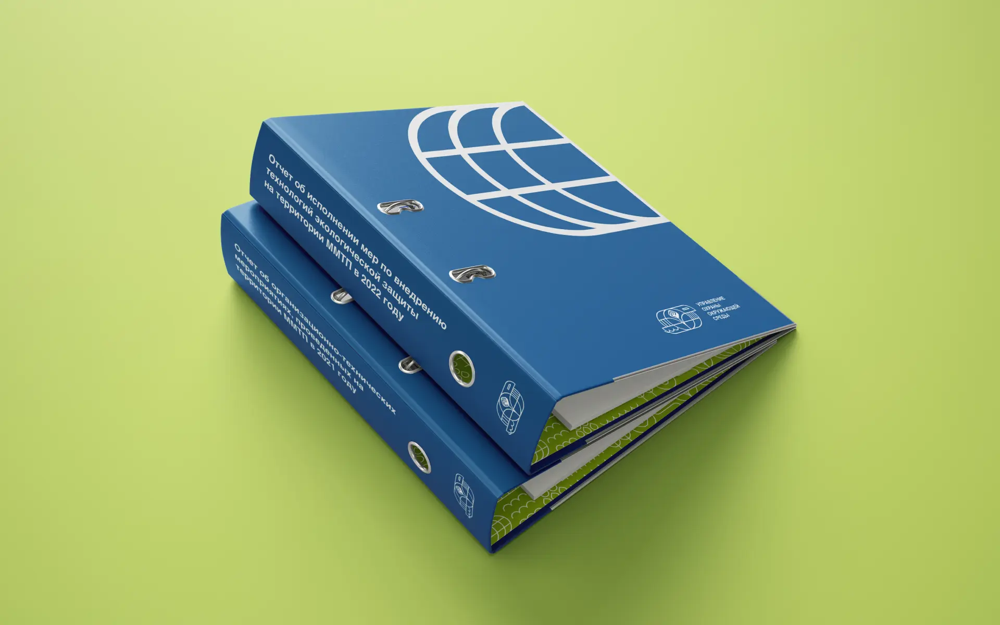
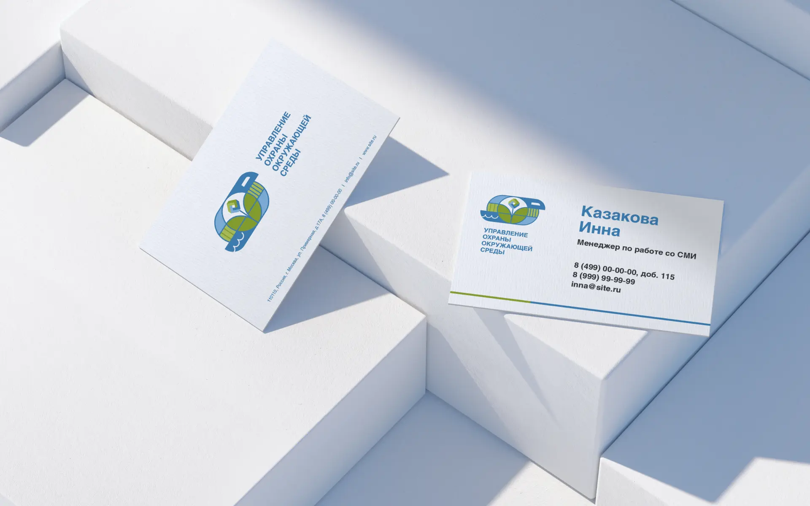
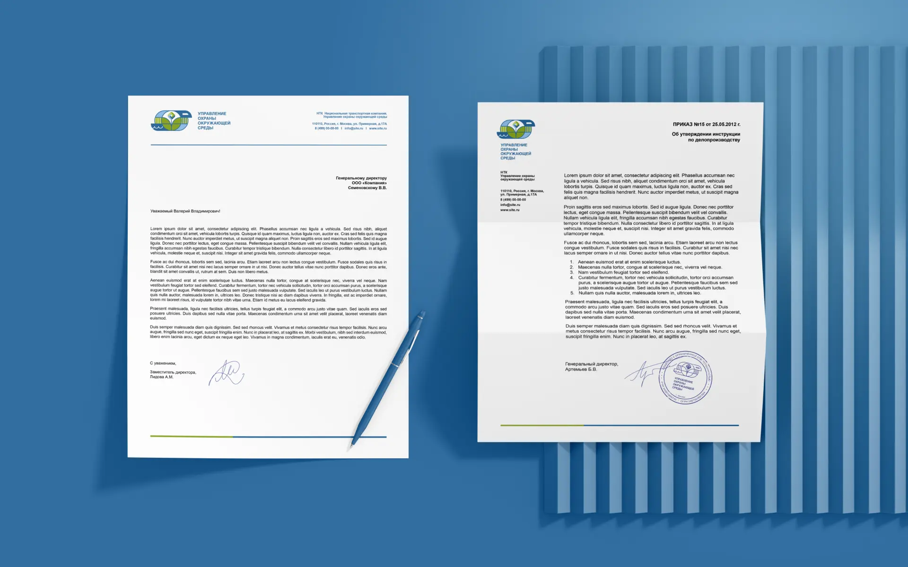
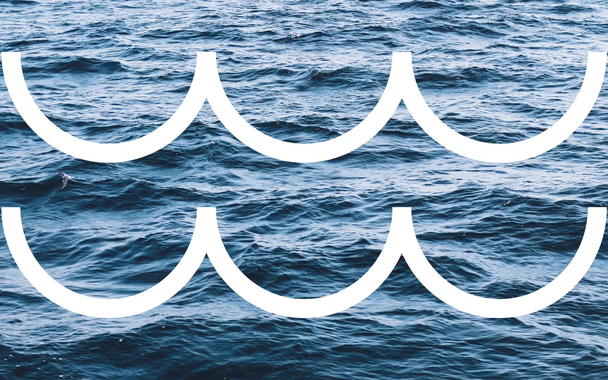
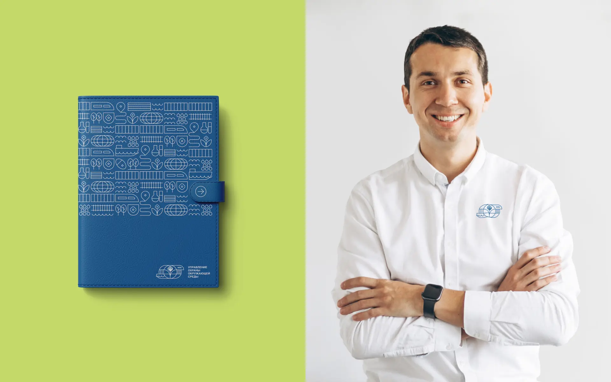
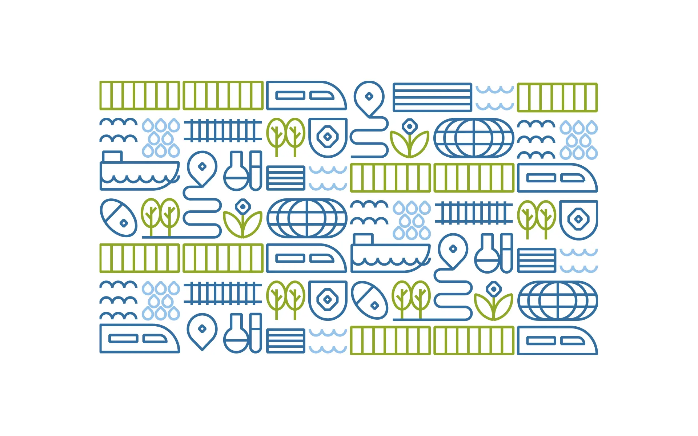
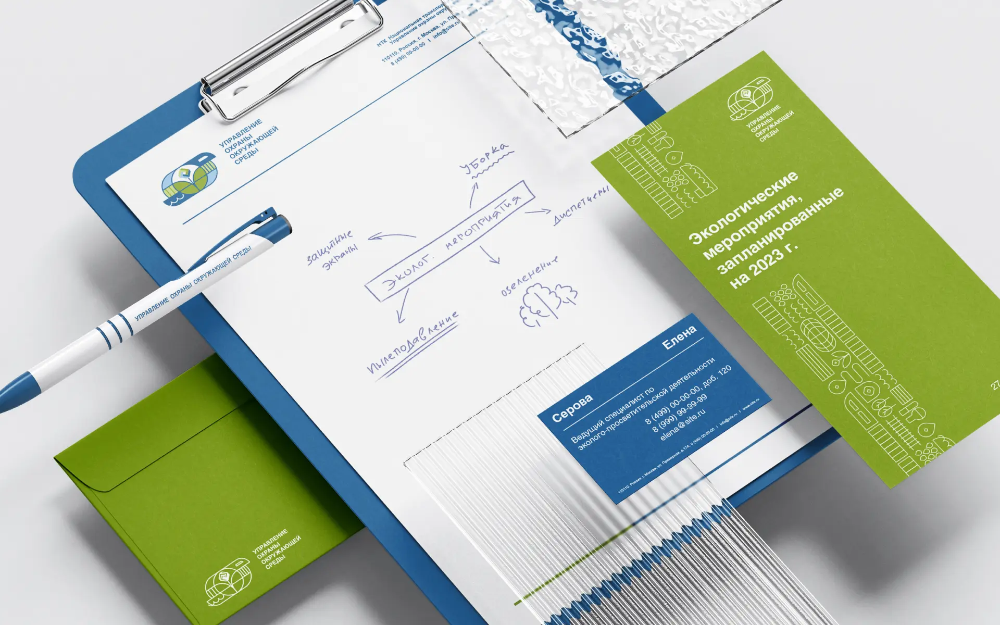
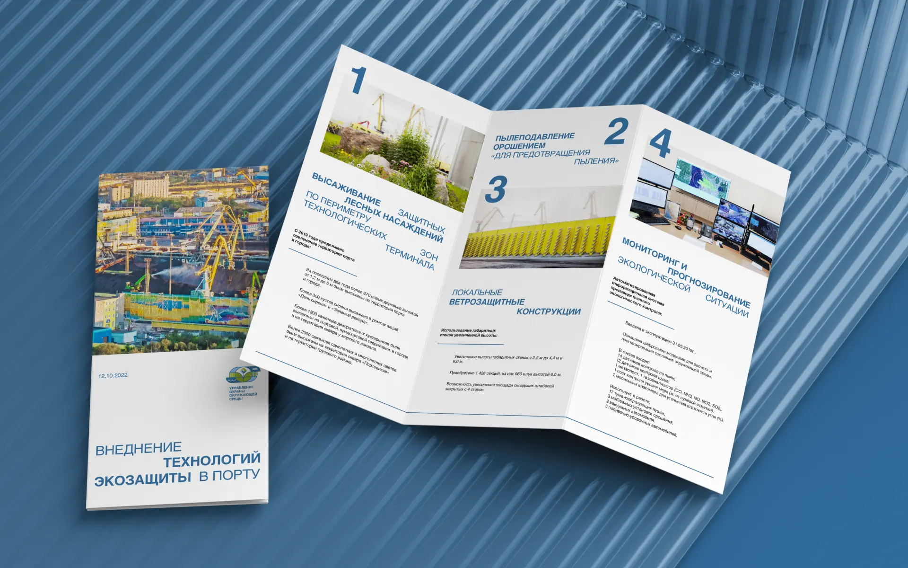
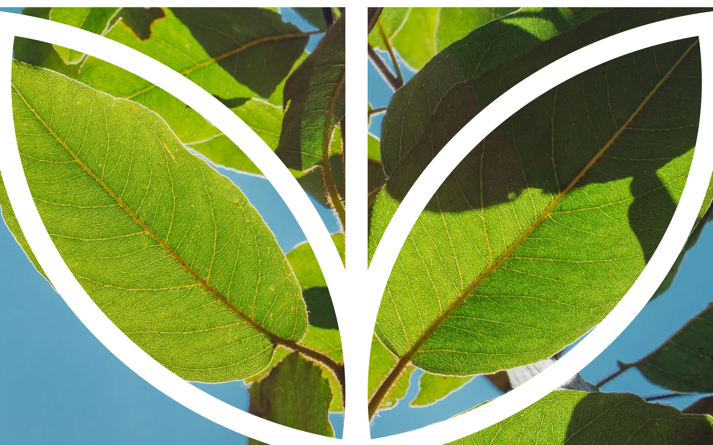
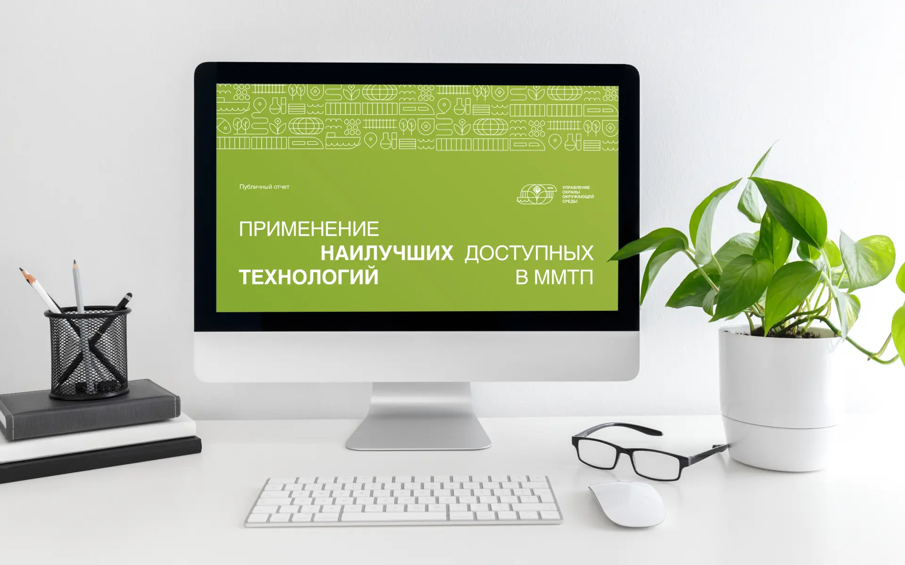
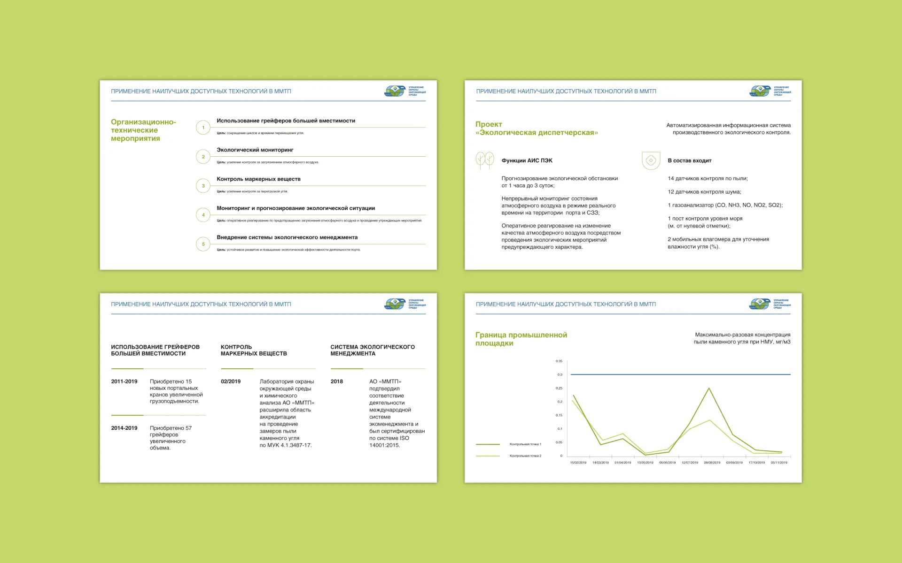
Отвечала за разработку концепции, создание логотипа, фирменной графики, визуальной системы, адаптацию айдентики на различные носители и подготовку финальной презентации проекта.